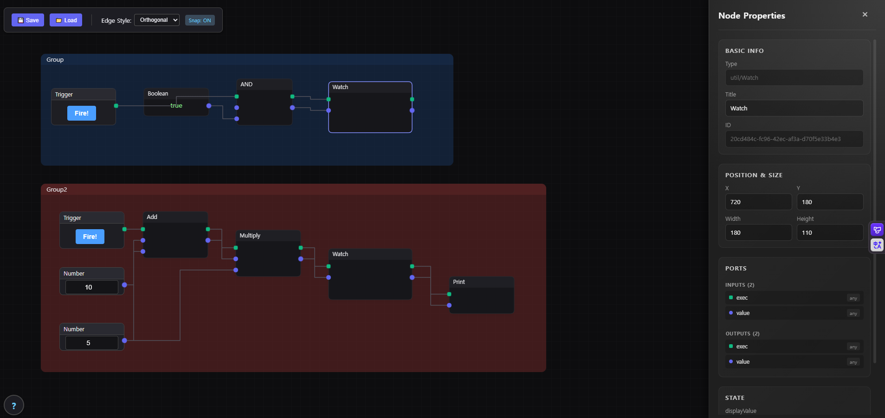

의류부자재 플랫폼(B2C/B2B)
- AI 검색 기반 의류부자재 거래 플랫폼 입니다.
Problem
부자재의 카테고리가 복잡하고 제조사 마다 다르게 분류
Solution
이미지의 특징을 기반으로 부자재를 분류

최신 기술을 활용한 보안 및 시각화 프로젝트
- AI 검색 기반 의류부자재 거래 플랫폼 입니다.
- AI 학습을 위한 데이터 수집 스크래퍼
- 이미지를 각 사이트에 맞게 수집하고 정제
- 이미지 라벨링
이벤트 관리/ 알림 관리 등 보안관제를 위한 통합 서비스 입니다.
기밀 프로젝트의 리드 개발자로 투입 되었고 좋은 성과로 표창을 받았습니다.
보안장비 로그를 수집하고 룰 관리를 하는 서비스 입니다.

서버/서비스 실시간 모니터링을 위한 NMS 서비스 입니다.
사회공학적 공격 경로를 점검하고 보안 취약점을 검증하는 침투 테스트 서비스입니다.
보안관제 자동화를 위한 서비스 입니다. 레이어 개념으로 플레이북 수를 최소화하여 효율적으로 관리할 수 있도록 설계했습니다
HTML 요소를 오버레이 할 수 있는 사용자 정의 노드 모듈입니다.

가볍고 빠른 트리 컴포넌트 입니다.